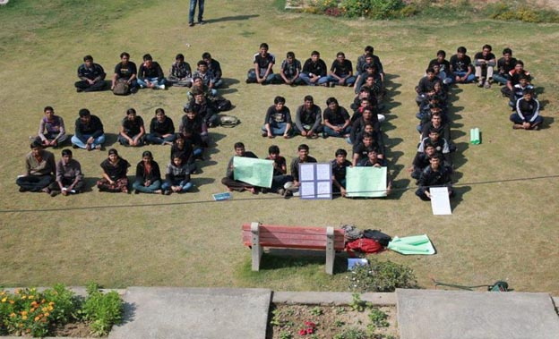

Good To Know
Good To KnowJEE—Don’t turn it into Joke Entrance Examination
There has a strong protest from all the other IITs for scrapping the JEE. Sorry as we are official newsletter we should not use such words. May be we should say there is a protest against the new pattern of entrance examination.
This is the quote from all those who are protesting against this new pattern—“Why not make JEE as that common exam & board cut to 70%. No one can say that they ignored board exam, if they scored twice than passing marks, but to demand scoring 100% marks in English, Hindi, biology etc. for engineering/technology student is injustice. Plus this new policy will debar more that 50% of population who are poor and who cannot afford extensive coaching and preparation now required. Why is this injustice being done to COMMON people?”
The students named the 10th Feb as Black day in the history of IIT-JEE and called every one form all IITs to wear a black shirt and not to go to the classes on this day in order to show the protest. This was very strong in IIT–Delhi, IIT Bhubaneswar, and IIT Patna. In IIT-Patna they showed their resentment to the new system by forming the shape of JEE in front of their academic building.
Uff.. Whatever, we can’t do anything about this issue expect to show our disagreement. Hope the ministry once again considers this matter and takes a fair decision about changing the pattern of the entrance examination.
If you want to know further details about this protest check this link: https://www.facebook.com/alliits
and
http://iitians-org.blogspot.in/2012/02/why-new-iit-engg-selection-pattern-is.html